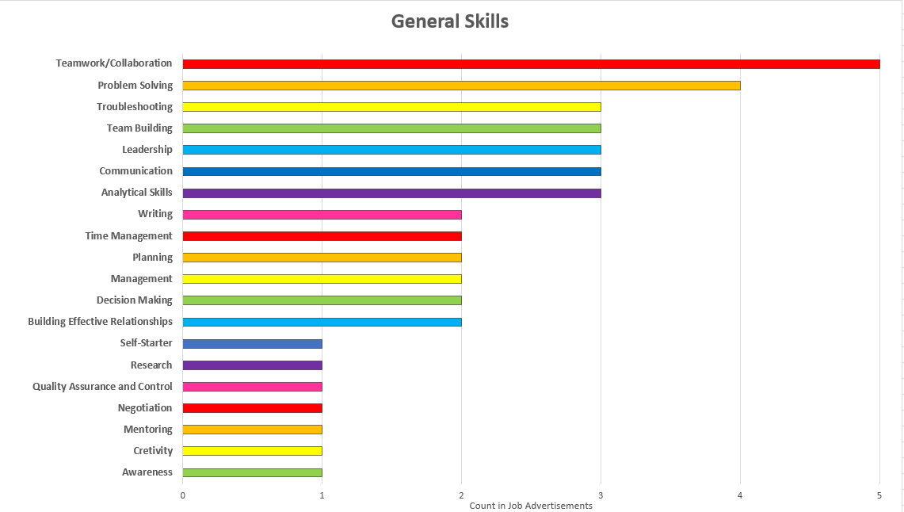
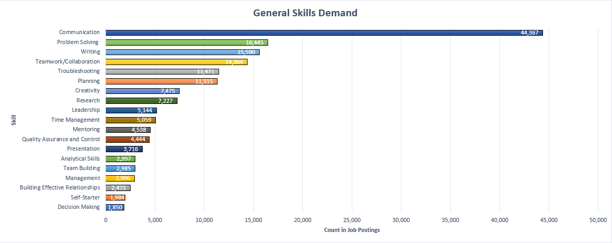

What are the group’s ideal job titles?
Software Engineer: Google Staff Software Engineer – Matthew Rosin
Software Engineer: Garmin Android App Developer – Paul Baird
Security Analyst: Cyber Security Analyst – Samuel Young
Software Developer: Mobile (React Native) – Andrew Dauven
Service Delivery Manager: IT Delivery Manager – Dev Patel
Solutions Architect: Game Developer – Emre Arslan
How do they rank in terms of demand from employers?
In terms of demand, out of the groups ideal job titles the most sought after by employers (between Mar. 24, 2017 – Mar. 23, 2018) is Solutions Architect with a total of 987 job postings. The next highest job title in demand is Software Engineer with a total of 539 job postings. After that is Service Delivery Manager with a total of 338 job postings, followed immediately by Software Developer with a total of 337 job postings. There is little to no demand for Security Analysts from the Burning Glass data, but as it is a military type job there is very specific demand for it.
What are the general skills required?
Across all the group’s ideal jobs, the required general skills are:

General skills rank in terms of demand?
The general skills in order of demand in the groups combined skill set are:

Three highest ranked general skills which are not in our required skill set?
1. Leadership
2. Quality Assurance and Control
3. Analytical Skills
What are the IT-specific skills required?
The specific IT skills required by the group’s ideal jobs combined are:

IT skills rank in terms of demand?
The IT skills in order of demand in the groups combined skill set are:

Three highest ranked IT skills that are not in our required skill set?
1. Project Management
2. Business Management
3. Business Analysis
Has your opinion on ideal job changed? Why or why not?
After a discussion with the group, most of our chosen ideal jobs have not changed except for Andrew who advised he would aim for a higher position of Computer Scientist. Andrew picked Computer Scientist as it is a more developed job title than his previous ideal job of Software Developer. Andrew wants to use ‘Software Developer’ as a stepping stone to reach his higher goal of ‘Computer Scientist’. Andrew did also advise that rankings did not affect his choice as it is constantly changing and ever evolving.
The rest of the group however have come to agree that their chosen jobs are what they are passionate about, and their opinions have not changed after looking through the Burning Glass data. Regardless of ranking, availability or demand from employers, it is a personal goal they want to achieve and it is the job they would like to do in the future. In the future, it is likely that the chosen ideal jobs will change depending on the person. However demand from employers will also likely change as the world continues to grow and develop into the future IT-age.
With these rankings, often comes another important point: salary. The higher the ranking a job is, the higher the salary the company will offer for it. It is logical to assume that when demand is high, so is the rewards. However as discussed with the group, even though the higher-ranking jobs would more than likely have higher salaries, passion comes first. If a person doesn’t enjoy what they are doing, then no amount of money will be enough to satisfy them.